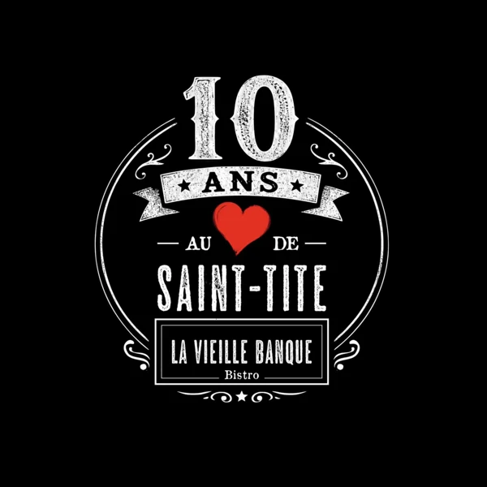
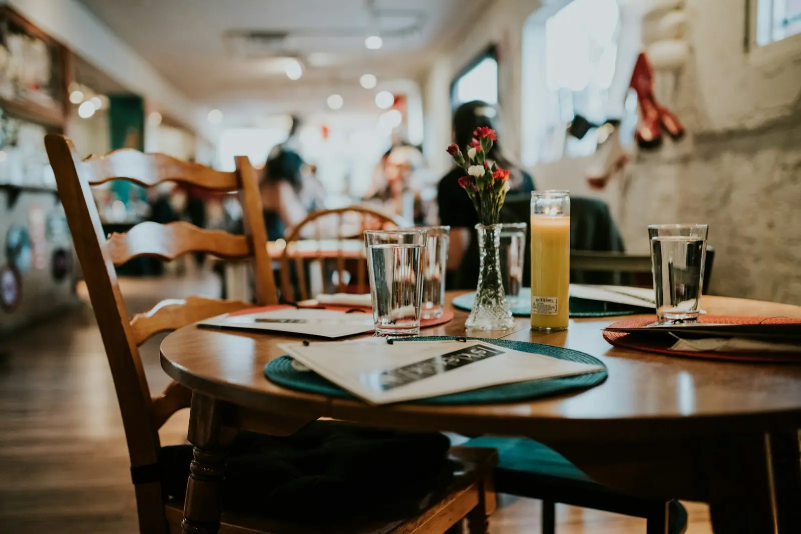

418-365-4191Un bistro installé dans l'ancienne banque du village. Cuisine santé, sans friture, déjeuners avec fruits frais et ardoise du midi.
Réserver · 418-365-4191
Prix à intégrer.*
Isabelle Campeau a fait de la vieille banque un endroit où l'on mange bien, sans friture, avec ce qu'il y a de frais. Le décor garde le caractère du bâtiment.
4,8 / 5 · 175 avis Google · voir sur Google Maps
« Le meilleur resto de toute la région de Mékinac! Les déjs sont parfaits et offrent de bonnes portions. J'aime beaucoup les béné au saumon fumé. La décoration est aussi parfaite, tout est très beau, très harmonieux, de bon goût et bien entretenu. Merci bcp! »
« Arrivée affamée et repartie en roulant! Quelle belle découverte! Accueil vraiment sympathique et excellente cuisine. C'est clair que que je reviendrai au prochain passage à St-Tite. »
« Roxanne une super serveuse efficace , polie respectueuses vraiment sur la coche et avec une capacité d'humour et qui connait le noms des clients vraiment gentille .Les oeufs bénédictine étaient vraiment bon , un vrai délice »
« Excellente nourriture maison. Service impeccable avec le sourire. On va y retourner, c’est sûr »
441, rue Notre-Dame, Saint-Tite (QC) G0X 3H0
418-365-4191 · isa.campeau@gmail.com